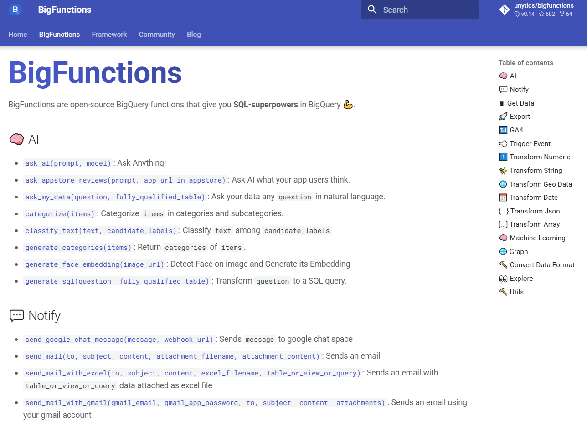

A Framework
for BigQuery functions¶
Build a catalog of BigQuery functions
using BigFunctions Framework
Discover the framework¶
-
A YAML Standard¶
Each function is defined in a yaml file (with its author, description, arguments, examples, code, etc)
Yaml files are used to test & deploy the functions and generate a documentation website (such as this website).
-

-
A Command Line Interface¶
bigfunCLI is installable with onepip installand enables you to:- get the yaml file of a public function
- test the function
- deploy it
- generate a documentation website (such as this website)
-

-
A Documentation Website¶
The command line interface generates your catalog of the available functions in your company with use cases and examples.
Foster self-service for your data-people!
-

Get Started!¶
bigfun CLI (command-line-interface) facilitates BigFunctions development, test, deployment, documentation and monitoring.
1. Install bigfun üõ†Ô∏è¬∂
pip install bigfunctions
2. Use bigfun ü∂
$ bigfun --help
Usage: bigfun [OPTIONS] COMMAND [ARGS]...
Options:
--help Show this message and exit.
Commands:
deploy Deploy BIGFUNCTION
docs Generate, serve and publish documentation
get Download BIGFUNCTION yaml file from unytics/bigfunctions...
test Test BIGFUNCTION
3. Create you first function üë∑¬∂
Functions are defined as yaml files under bigfunctions folder. To create your first function locally, the easiest is to download an existing yaml file of unytics/bigfunctions Github repo.
For instance to download is_email_valid.yaml into bigfunctions folder, do:
bigfun get is_email_valid
You can then update the file to suit your needs.
4. Deploy you first function ü뮂Äçüíª¬∂
- Make sure the
gcloudcommand is installed on your computer- Activate the application-default account with
gcloud auth application-default login. A browser window should open, and you should be prompted to log into your Google account. Once you've done that,bigfunwill use your oauth'd credentials to connect to BigQuery through BigQuery python client!- Get or create a
DATASETwhere you have permission to edit data and where the function will be deployed.- The
DATASETmust belong to aPROJECTin which you have permission to run BigQuery queries.
You now can deploy the function is_email_valid defined in bigfunctions/is_email_valid.yaml yaml file by running:
bigfun deploy is_email_valid
The first time you run this command it will ask for
PROJECTandDATASET.Your inputs will be written to
config.yamlfile in current directory so that you won't be asked again (unless you delete the entries inconfig.yaml). You can also override this config at deploy time:bigfun deploy is_email_valid --project=PROJECT --dataset=DATASET.
Test it with üëÄ:
select PROJECT.DATASET.is_email_valid('paul.marcombes@unytics.io')
5. Deploy you first javascript function which depends on npm packages üëΩ¬∂
To deploy a javascript function which depends on npm packages there are additional requirements in addition to the ones above.
- You will need to install each npm package on your machine and bundle it into one file. For that, you need to install nodejs.
- The bundled js file will be uploaded into a cloud storage bucket in which you must have write access. The bucket name must be provided in
config.yamlfile in a variable namedbucket_js_dependencies. Users of your functions must have read access to the bucket.
You now can deploy the function render_template defined in bigfunctions/render_template.yaml yaml file by running:
bigfun deploy render_template
Test it with üëÄ:
select PROJECT.DATASET.render_template('Hello {{ user }}', json '{"user": "James"}')
6. Deploy you first remote function ⚡️¶
To deploy a remote function (e.g. python function), there are additional requirements in addition to the ones of Deploy you first function section.
- A Cloud Run service will be deployed to host the code (as seen here). So you must have permissions to deploy a Cloud Run service in your project
PROJECT.gcloudCLI will be used directly to deploy the service (usinggcloud run deploy). Then, make sure you are logged in withgcloudby calling:gcloud auth login. A browser window should also open, and you should be prompted to log into your Google account. WARNING: you read correctly: you have to authenticate twice. Once for bigquery python client (to deploy any function including remote as seen above.) and once now to usegcloud(to deploy a Cloud Run service).- A BigQuery Remote Connection will be created to link BigQuery with the Cloud Run service. You then should have permissions to create a remote connection. BigQuery Connection Admin or BigQuery Admin roles have these permissions.
- A service account will be automatically created by Google along with the BigQuery Remote Connection. BigQuery will use this service account of the remote connection to invoke the Cloud Run service. You then must have the permission to authorize this service account to invoke the Cloud Run service. This permission is provided in the role roles/run.admin
You now can deploy the function faker defined in bigfunctions/faker.yaml yaml file by running:
bigfun deploy faker
Test it with üëÄ:
select PROJECT.DATASET.faker("name", "it_IT")
7. Host your Documentation on GitHub Pages¶
üí° Note: If you want to host your documentation on GitLab, please check this link.
Steps to Host Your Documentation on GitHub Pages¶
- Create a new repository on GitHub.
- Initialize Git in your local project:
git init - Add the remote repository
git remote add origin <repository-url> - Generate the documentation
bigfun docs generate -
(Optional) Preview the documentation before publishing
Then open http://localhost:8000 in your browser.bigfun docs serve -
Add, commit, and push your changes
git add . git commit -m "Add documentation" git push origin main - Deploy to GitHub Pages
mkdocs gh-deploy --force - Access your hosted documentation
https://<your-github-username>.github.io/<repository-name>/
❓ FAQ¶
How to correctly highlight sql, python and javascript code in yaml files?
In yaml files multiline string are by default highlighted as strings.
That makes reading code field hard to read (with all code in the same string color).
To correctly highlight the code regarding its python / javascript / sql syntax,
you can install YAML Embedded Languages VSCode extension.
How to define specific parameters for cloud run of python functions?
In yaml files you can add a cloud_run field with cloud run parameters.
Any argument of 'cloud run deploy' command
can be put under cloud_run field.
You can see an example here.
You can also put the same config in your config.yaml file to define default values
(useful for defining a default service account for functions).
The arguments defined in config.yaml will be overriden by the arguments (if defined)
in the function yaml files.
How to change the cloud run service account for python functions?
By default, your default compute service account is used when deploying cloud run. To change that, see the previous FAQ item which show how to define specific parameters for cloud run.
How to generate key pair for encryption / decryption of secrets contained in arguments
In order not to pass secrets in plain text in function arguments, bigfunctions provides a mechanism to encrypt a secret on the documentation page of a function (for example here). Only the given function will be able to decrypt it for the given users.
For this to work you need to:
- Generate a key pair for encryption / decryption by running
bigfun config generate-key-pair-for-secrets.- The public key (used for encryption on the website) will be stored in your
config.yamland used when you generate your website. - The private key (used for decryption by the function) will be printed on the console
- The public key (used for encryption on the website) will be stored in your
- Store the private key in a secret named
bigfunctions_private_keyin the Google Secret Manager of the project where you deploy the function. - Give to the service account of the function
Secret Accessorrole to the private key.
The deployed function will automatically download the private key and decrypt any encrypted secret in arguments tagged as secrets (and check secrets were encrypted for this function and for the user who calls it).